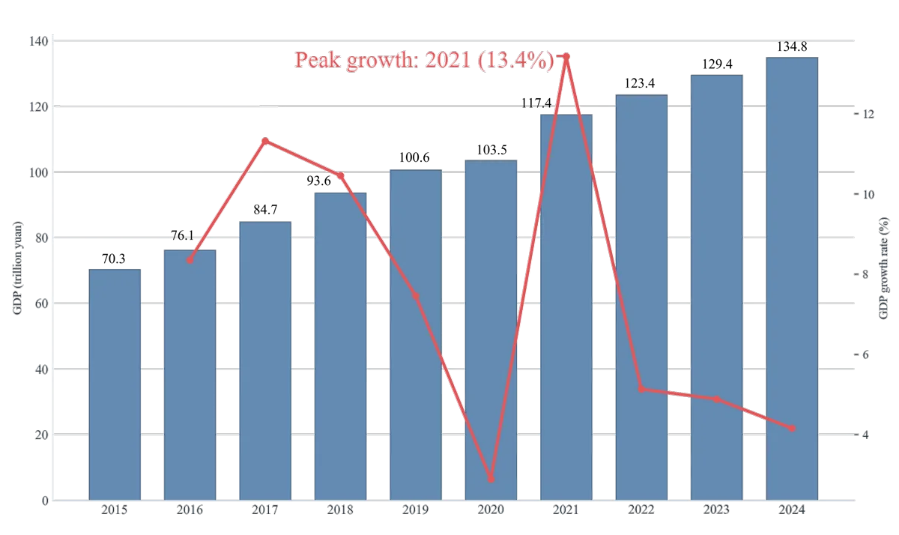
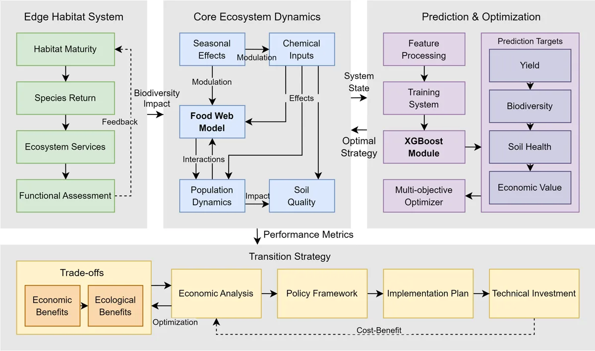
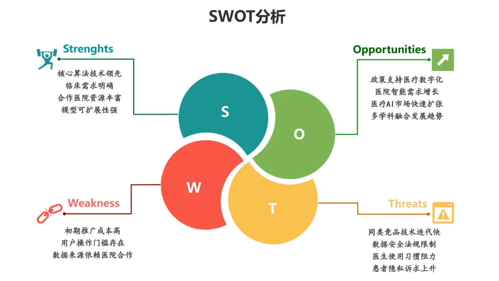

About
关于我
I am an undergraduate student majoring in Data Science and Big Data Technology at Minzu University of China. My research interests center on trustworthy artificial intelligence, multimodal intelligence, medical image analysis, numerical weather prediction, and privacy protection in social networks.
我是中央民族大学数据科学与大数据技术专业本科生。我的研究兴趣集中于可信人工智能、多模态智能、医学影像分析、气象数值预测和社交网络隐私保护。
My recent work spans LLM-based multi-agent system safety, dynamic privacy protection with large language models, coronary angiogram segmentation, and chest X-ray classification with topological data analysis and ResNet.
近期研究工作涵盖基于大语言模型的多智能体系统安全、大模型驱动的社交网络动态隐私保护、冠脉造影图像分割，以及结合拓扑数据分析与 ResNet 的胸部 X 光分类。
Education
教育经历
Minzu University of China
中央民族大学
B.S. in Data Science and Big Data Technology
数据科学与大数据技术，本科
2023.09 - Present
GPA: 4.09/5.0; ranking: 10/119, top 8%.
GPA：4.09/5.0；绩点排名：10/119，前 8%。
Publications
论文与学术成果
-
Who's the Mole? Modeling and Detecting Intention-Hiding Malicious Agents in LLM-Based Multi-Agent Systems
Y. Xie, C. Zhu, X. Zhang, T. Zhu, D. Ye, M. Wang, C. Liu.
arXiv preprint, 2025.
-
From Spark to Fire: Modeling and Mitigating Error Cascades in LLM-Based Multi-Agent Collaboration
Y. Xie, C. Zhu, X. Zhang, T. Zhu, D. Ye, M. Qi, H. Chen, W. Zhou.
arXiv preprint, 2026.
-
Contrastive Learning for Chest X-ray Classification: A Fusion of Topological Data Analysis and ResNet
H. Ren, Z. Luo, F. Jing, X. Zhang, H. He, Y. Yu, D. Zhao.
IEEE International Conference on Data Science in Cyberspace, 2024.
-
LASF: A Local Adaptive Segmentation Framework for Coronary Angiogram Segments
H. Ren, D. Li, F. Jing, X. Zhang, X. Tian, S. Xie, et al.
Health Information Science and Systems, 2025.
-
Dynamic Privacy Protection with Large Language Model in Social Networks
Y. Xie, C. Zhu, X. Zhang, X. Hu, X. Liu.
International Conference on Algorithms and Architectures for Parallel Processing, 2024.
Research & Internship Experience
科研与实习经历
Artificial Intelligence Institute, Guangdong Second Provincial General Hospital
广东省第二人民医院人工智能研究所
Research Assistant Intern
实习科研助理
2024.02 - 2024.09
- Worked on cardiac angiography image analysis and brain-slice graph analysis, including medical image data processing, experiment organization, and AI model training.
- Supported model tuning, result analysis, and manuscript preparation for medical image classification and segmentation research.
- Contributed to two CCF-C conference papers as co-first author and participated in a SCI Q2 manuscript as student first author.
- 参与心脏造影图像分析和脑片图形分析项目，负责医学影像数据处理、实验整理与人工智能模型训练。
- 参与医学影像分类与分割相关研究，配合完成模型调优、结果分析与论文材料整理。
- 以共同一作身份参与发表 CCF-C 类会议论文两篇，并以学生一作身份参与 SCI 二区论文在投工作。
Big Data Management Center of Rui'an, Zhejiang
浙江省瑞安市大数据管理中心
Data Security Intern
数据安全科实习生
2024.06 - 2024.08
- Assisted municipal departments with data cleaning, aggregation, screening, and organization; participated in database management and maintenance.
- Worked on enterprise data governance tasks, including enterprise data filtering, collection, cleaning, and standardization.
- 配合相关部门完成市级数据清洗、归集、筛选与整理工作，参与数据库管理与维护。
- 参与瑞安市企业相关数据治理项目，负责企业数据筛选、归集、清洗和规范化处理。
Innovation Research Center, Guangdong Meteorological Service
广东省气象局创新研究中心
Research Assistant Intern
实习科研助理
2024.09 - 2025.04
- Participated in short-term precipitation numerical prediction research, covering data processing, model training, tuning, and testing.
- Conducted literature review, technical analysis, and writing for AI-based meteorological prediction and large-model forecasting.
- 参与短临降水数值预测科研工作，负责数据处理、模型训练、调优和实验测试。
- 参与人工智能气象预测与大模型预报方向的文献调研、技术分析和论文写作。
Research Group, Faculty of Data Science, City University of Macau
澳门城市大学数据科学学院课题组
Research Member
科研成员
2024.06 - 2025.11
- Worked on dynamic privacy protection mechanisms in social networks driven by large language models, including idea organization, mechanism design, and manuscript writing.
- The project paper was published at ICA3PP 2024, a CCF-C conference.
- 参与大语言模型驱动的社交网络动态隐私保护机制研究，负责研究思路整理、机制设计与论文写作。
- 项目成果论文发表于 2024 年 ICA3PP 会议，会议类别为 CCF-C 类。
Honors & Awards
荣誉与竞赛奖励
Honors
主要荣誉
- National Scholarship
- 国家奖学金
- Xiaomi Scholarship
- 小米奖学金
Competitions
竞赛奖励
National & International Awards
国家级 / 国际级
- Finalist, Mathematical Contest in Modeling / Interdisciplinary Contest in Modeling, 2024
- 2024 年美国/国际大学生数学建模竞赛：Finalist 奖（特等奖提名）
- National Silver Award, Final Round, 14th Challenge Cup Chinese College Students' Entrepreneurship Plan Competition
- 第十四届“挑战杯”中国大学生创业计划竞赛主体赛总决赛：国家级银奖
- National Second Prize, 12th National College Student Digital Media Technology Works and Creative Competition
- 第十二届全国大学生数字媒体科技作品及创意竞赛：国家级二等奖
- National Second Prize, 12th National College Student Digital Media Technology Works and Creative Competition, Second Project
- 第十二届全国大学生数字媒体科技作品及创意竞赛（第二项）：国家级二等奖
- National Third Prize, Final Round, 18th iCAN College Student Innovation and Entrepreneurship Competition
- 第十八届 iCAN 大学生创新创业大赛总决赛：国家级三等奖
- National Gold Award, Higher Education Main Track, China International College Students' Innovation Competition, 2025
- 中国国际大学生创新大赛（2025）高教主赛道：国家级金奖
- National Third Prize, Challenge Cup National College Students' Extracurricular Academic Science and Technology Works Competition
- “挑战杯”全国大学生课外学术科技作品竞赛：国家级三等奖
- National Group First Prize, Final Round, 15th Chia Tai Cup National College Student Market Survey and Analysis Competition
- 正大杯第十五届全国大学生市场调查与分析大赛总决赛：国家级集体一等奖
- International Group First Prize, Final Round, 13th Asia-Pacific College Student Market Survey Competition
- 第十三届亚太地区大学生市调大赛总决赛：国际级集体一等奖
Provincial / Regional Awards
省部级 / 赛区级
- Provincial Third Prize, Hainan Division, 2024 Contemporary Undergraduate Mathematical Contest in Modeling
- 高教社杯全国大学生数学建模竞赛（2024）海南赛区：省级三等奖
- Provincial First Prize, South China Division, 18th iCAN College Student Innovation and Entrepreneurship Competition
- 第十八届 iCAN 大学生创新创业大赛华南赛区：省级一等奖
- Provincial Silver Award, Hainan Division, China International College Students' Innovation Competition, 2024
- 中国国际大学生创新大赛（2024）海南赛区：省级银奖
- Provincial Second Prize, Hainan Division, 2024 Contemporary Undergraduate Mathematical Contest in Modeling
- 2024 年全国大学生数学建模竞赛海南赛区：省级二等奖
- Provincial Third Prize, Guangdong/Hainan/Hong Kong/Macao Division, National College Student Statistical Modeling Competition
- 全国大学生统计建模大赛广东赛区（广东/海南/港澳）：省级三等奖
- Provincial Third Prize, Hainan Division, Chinese Collegiate Computing Competition
- 中国大学生计算机设计大赛（海南赛区）：省级三等奖
- Provincial First Prize, Hainan Division, National College Student Digital Media Technology Works and Creative Competition
- 全国大学生数字媒体科技作品及创意竞赛（海南赛区）：省级一等奖
- Provincial Excellence Award, Short Video Event, 2024 Understanding Contemporary China Foreign Language Showcase
- 2024“理解当代中国”外语风采大赛短视频赛项：省级优秀奖
Skills
相关技能
Python
C
Machine Learning
Deep Learning
Medical Imaging
Meteorological Prediction
Large Language Models
Data Cleaning
LaTeX
Academic Writing
Research Visualization
Project Coordination
Python
C 语言
机器学习
深度学习
医学影像
气象预测
大语言模型
数据清洗
LaTeX
论文写作
科研绘图
项目统筹
Portfolio
作品集概览
A curated portfolio page presents selected presentation design, research visualization, and video editing work. Presentation decks are available as PDF previews, with representative figures selected for quick browsing.
作品集页面集中展示精选 PPT 汇报设计、科研绘图和视频剪辑作品。PPT 均提供 PDF 预览，并精选代表性图像便于快速浏览。
7 PDF previews
7 份 PDF 预览
42 extracted PPT figures
42 张 PPT 提取图
4 video previews
4 个视频预览


